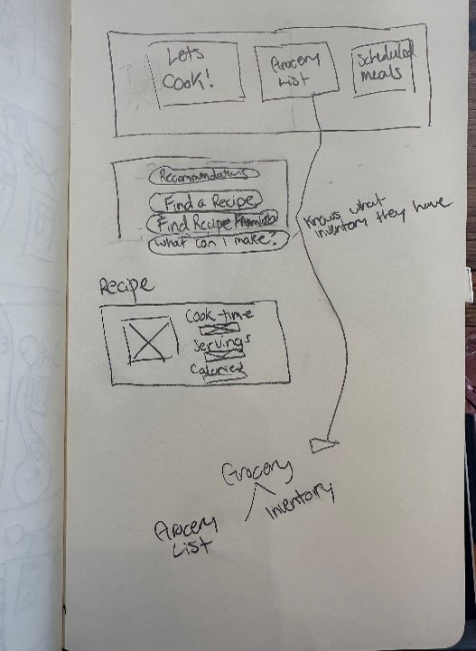
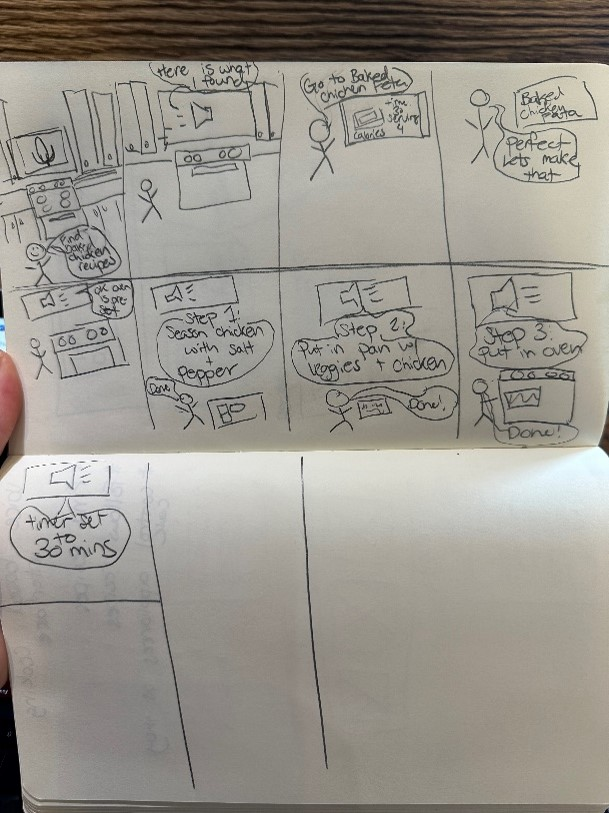
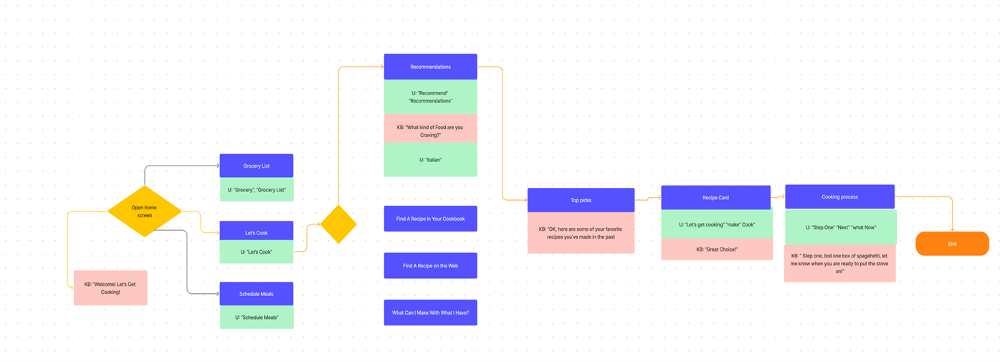

Jennifer's UX Portfolio
Creatively Designing Solutions
- Problem
- thought Porcess
- Feedback
- Adjustments based on Feedback
- Final Prototype
Voice Prototype:KitchenBuddy
 This prototype is a voice-based cooking interface that allows you to find recipes, control appliances while you are cooking, schedule weekly meal plans, in addition to keeping inventory of what you have in your refrigerator. There were several personas I was thinking of when creating this prototype which were:
Lisa: a 33 year-old mom with three children. She is always on the go and could use all the help she can get to help her stay on track and have her kids eating clean.
Ben: a 24 year old male living on his own. Ben is a health nut and is just learning how to live on his own and that includes cooking! Ben needs something that will help him learn his way around his kitchen and encourage him to try new recipes.
Feedback:
- Add more command words within the voice command library. For example, I originally had “turn on stove” as a command but the user could also say “boil water” and I still wanted that to be a trigger.
- Some feedback I received from my initial sketches and storyboard were that there should be a personal recommendation feature based on their recipe book in addition to recipes that could be found on the web. They thought web recommendations could sometimes be overwhelming and if in a rush they might prefer to cook something they know.
- The ability to customize their recipe search so they can quickly filter through their recipes.
- The ability to rate recipes they try so they can later refence.
- The ability to create a grocery list from their scheduled meals. They find it a hassle to figure out what they have/what they need for the recipe when creating a grocery list. It would be helpful if it could be done for you.
An activity Map that outlines the voice prompts of the application. This was helpful, especially when building out the screens on an unfamiliar platform.
Design Thought Process
Cooking in the kitchen can be chaotic, especially with children running around. The KitchenBuddy will walk you through a recipe step by step to ensure you don’t forget a step. It also allows you to focus on cooking without worrying about operating the cooking appliances, KitchenBuddy will handle it. KitchenBuddy provides you with recommendations, maintains your recipe cookbook, allows you to find and follow recipes from the web and gives you suggestions on what you can make with what you currently have based on your food inventory KitchenBuddy tells them each cooking step, will turn on their appliances, set timers and let them know when something is done cooking. For a busy individual its tough to keep track of everything going on around you. This feature gives users one less thing they must remember, their grocery list. It also helps the individual to keep track of what food they already have to reduce food waste. People like to plan ahead their weekly meals, especially if they are trying to stay on track with a certain diet. This feature allows the user to plan ahead and create a grocery list based on their selections. I included a filter option so people could find recipes based on how they’ve rated them, serving size, and meal type so people can further customize their recipe search.